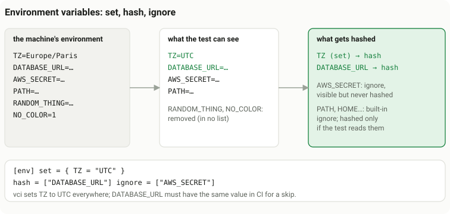

Configuration
Two committed files control vci: vci.toml sets policy, and .vci/allowed_signers says whose attestations count. A repository whose CI signs keylessly (vci 2.0) adds .vci/identities.toml and the Sigstore trust root.
CI reads them from the base commit, the tip of the branch a pull request merges into. A change to any of them in a pull request has no effect on that pull request; it takes effect once merged. If vci.toml is missing or unreadable at the base commit, everything runs; so does a missing allowed_signers, unless the base commit has .vci/identities.toml. See trust comes from the base branch.
vci.toml
This is a complete file for one Vitest project. vci init writes a longer, commented version of it.
project = "." # project dir, relative to the repo root
adapter = "vitest" # or "pytest", "go", "cargo", "rails"
[policy]
# Nothing is skipped on these refs: every merge gets a full run.
no_skip_refs = ["refs/heads/main", "refs/tags/**"]
# ...except what CI's own key attested (see GitHub Actions).
# no_skip_refs_except = ["github-actions"]
[env] # every variable in no list is removed
set = { TZ = "UTC" } # vci sets these everywhere
hash = [] # from the machine; a change re-runs
ignore = [] # visible, never hashed: secrets go hereEvery key you leave out takes its default, listed below. Unknown keys are errors.
| Key | Default | Meaning |
|---|---|---|
project | "." | The project directory (where the test runner runs), relative to the repository root. |
adapter | "vitest" | The test runner: "vitest", "pytest", "go", "cargo" or "rails". |
runner | detected | Rails only: "minitest" or "rspec". See RSpec. |
rails_inputs | "loose" | Rails only, since 2.7.36: "loose" leaves what Rails reads at boot out of every test's inputs (routes, initializers, environments, the boot files, config.ru, migrations, locales and the autoload records), so a change there runs no test again on a pull request; the default branch's full run catches it. "strict" records everything. See Rails. |
ignore_inputs | [] | Rails only, since 2.7.36: more globs, relative to the project directory, that are never inputs (in strict mode, the only ones). |
The rest of the file is four tables, explained in order below: [policy], [env], [[inputs]] and, for a repository with several projects, [[projects]].
[policy]
When an attestation is good enough, and where nothing is skipped.
| Key | Default | Meaning |
|---|---|---|
platform | "any" | Which OS and architecture may satisfy CI. "any" accepts an attestation from another platform, "same-os" requires the same OS, "exact" requires the same OS and architecture. |
libraries | "exact" | Rails and pytest: how native libraries and the interpreter's library versions are compared. "exact" matches a library opened through FFI (libvips) by file name and hash, and compares the SQLite, libyaml, time zone data and OpenSSL versions. "any" matches the library by name (libvips.42.dylib on macOS, libvips.so.42 on Linux), which must still be loaded in CI, and ignores those versions. See macOS to Linux. |
max_ttl | "30d" | Longest accepted attestation lifetime. vci run --ttl sets the lifetime of a new attestation (14 days unless you say otherwise). |
allow_dirty | true | Accept attestations made from a working tree with uncommitted changes. Inputs are hashed by content, not by commit. |
no_skip_refs | [] | Refs on which nothing is skipped, except what no_skip_refs_except allows. vci init writes ["refs/heads/main", "refs/tags/**"]. Keep your default branch here: that full run is the backstop against a false claim. |
no_skip_refs_except | [] | Principals whose attestations may still skip on a no_skip_refs ref, such as ["github-actions"] for CI's own key (see attesting in CI) or its keyless identity: a principal of allowed_signers or of .vci/identities.toml, which count the same. There, every other signer's attestation fails the signer check. Empty: those refs run everything. List no developer or agent here. |
attest_on_any_ref | [] | Since 1.9.2. Principals of no_skip_refs_except that vci ci --key (or --oidc) may attest as on refs outside no_skip_refs: a pull request's run then attests what it ran and publishes it, and the merge queue and main skip it. Only for a key the repository's own pull requests get and forks never do (a repository secret), where their authors are trusted with that; otherwise vci ci refuses to attest off no_skip_refs with such a key. |
never_skip | [] | Project-relative globs of test files that always run. Use it for tests whose inputs no collector can see. |
go_allow_net | false | Go: attest packages whose test links package net. The same as ignore_taints = ["go:net"]. See Go. |
ignore_taints | [] | Since 1.7.0: taints that do not refuse a unit. Glob patterns over the reason key that vci run's "why not attested" lines print ("process:*", "child_process.*", "fetch", "go:syscall", "external-without-version"); "*" matches every taint, and a pattern without : matches a whole category. The unit is attested with the taints recorded as waived (vci: attested a.test.ts (waived: child_process.execSync, +1)), and vci plan accepts it only while the base commit's policy still waives each one (otherwise the waived check fails and vci explain names the taint). vci: taints are never waived. Since 1.7.1 three of vci run's own refusals are waived the same way, by key: outside-repository (a read outside the repository, such as /proc/sys/net/core/somaxconn or /etc/lsb-release; the path is then not hashed), wrote-inside-repository (the written paths are then not inputs) and result:skipped (a pass with skipped tests); a failed result never is. Writes to node_modules/.vite, .vite-temp and .cache need no waiver. The trade-off: what a waived taint stands for (a child process's reads, a network response) is not recorded, so a change there does not re-run the unit. That is the point: CI cost over full determinism. See the reference. |
Removed: rails_allow_db was removed in 1.4.0, because vci no longer manages the Rails test database: a database server configured for the test environment needs no policy (see Rails). The key is a deprecated no-op kept for compatibility. A vci.toml that still sets it, at the top level or in a project, parses, so a base commit that has it does not make every test run; it has no effect, and vci run and vci plan print one warning. Remove it.
Platform overrides
Tighten the platform rule for some files and leave the rest on "any". An entry sets platform, libraries, or both:
[[policy.platform_overrides]]
match = ["src/native/**"] # project-relative globs
platform = "exact"
[[policy.platform_overrides]]
match = ["test/images/**"]
libraries = "exact"Overrides only tighten: the strictest of [policy] and every matching entry applies.
macOS to Linux
Under platform = "any", a Rails file that loaded libvips (any file that boots an app with Active Storage and image_processing) still runs on a Linux runner: Homebrew's libvips is a different file from apt's. The same happens when the SQLite, libyaml or time zone data versions differ, or, for pytest, the interpreter's SQLite or OpenSSL. To skip those files across platforms:
[policy]
platform = "any"
libraries = "any"Install libvips on the runner as well; under "any" it is matched by name, but it must still be loaded there. Everything else is still compared exactly: the Ruby or Python version, every gem or distribution in the lockfile, the inputs and the declared environment. By setting it you state that these libraries behave the same on both platforms for your tests. vci explain lists every difference the policy accepted.
[env]: environment variables
Environment variables can change a test's result, so vci decides which ones a test sees and hashes the ones that matter. The policy is three short lists, plus a short built-in list per runner; every other variable is removed from the test processes, in vci run and in CI alike:

[env]
# vci sets these in every test process, on every machine
set = { TZ = "UTC", LANG = "C.UTF-8" }
# taken from the machine and hashed: another value re-runs the test
hash = ["DATABASE_URL", "FEATURE_*", "!FEATURE_DEBUG"]
# taken from the machine, never hashed, never a reason to re-run
ignore = ["GITHUB_TOKEN", "AWS_*"]
[[env.files]] # additions for matching test files
match = ["src/db/**/*.test.ts"]
hash = ["PGDATABASE"]
ignore = ["PGPASSWORD"]Patterns are exact names, * wildcards, and a leading ! to exclude. Exclusions win. Matching is case-sensitive. set takes exact names and string values (write "1", not 1). The variables an [[env.files]] entry names reach every test of the project; only the matching files hash them up front.
Which variables reach the test
| Variable | Reaches the test | Hashed |
|---|---|---|
set | yes, with the value from vci.toml, on every machine | yes (the same value everywhere) |
hash | yes | yes |
ignore | yes | never |
Built-in hash (TZ; per runner what the runtime reads natively: RUSTFLAGS, GOFLAGS, PYTHONHASHSEED, Node's LANG, ...) | yes | when present |
Built-in ignore (PATH, HOME, USER, TMPDIR, caches) | yes | only if the test was observed reading it |
| Every other variable | no (removed) | recorded as absent if read |
Precedence when lists overlap: set, then hash, then ignore, then the built-in lists. vci env prints the effective lists of each project and what each variable is on this machine; vci env --base-ref origin/main shows where the base policy (the one CI uses) differs.
Use set for what must be identical locally and in CI (time zone, locale, CI, feature switches): nobody exports anything, and a laptop and a runner see the same value. A test that reads HOME or USER is never skipped on a runner when it was attested on a laptop: those values differ by definition.
CI, NO_COLOR and FORCE_COLOR are removed unless listed. Only the values vci itself sets for a runner win over set: RAILS_ENV=test and the collector's RUBYOPT, a node:test script's NAME=value assignments, and the fresh TMPDIR of Go, Cargo and Rails processes.
Seeing the policy: vci env
vci env [--base-ref REF] [--project NAME] [--format text|json] prints, per project, every variable the lists name, its class, where the rule comes from and what it is on this machine. It runs nothing.
$ vci env --project web
project web (node-test): env config ff29623f04f0
VARIABLE CLASS SOURCE HERE
LANG set vci.toml set "C.UTF-8"
TZ set vci.toml set "UTC"
FEATURE_* hash vci.toml hash pattern: 1 here
FEATURE_SEARCH hash vci.toml hash present (5d2a6bf0fba6)
NODE_ENV hash test script present (4878ca0425c7)
SCCACHE_* ignore vci.toml ignore pattern: 1 here
SCCACHE_DIR ignore vci.toml ignore present
HOME built-in ignore built-in (every runner) present
PATH built-in ignore built-in (every runner) present
built-in, not set here:
LC_ALL LC_MESSAGES NODE_OPTIONS UV_THREADPOOL_SIZE ...
present here, removed from the tests (recorded as absent if a test reads one):
CI GITHUB_TOKENWith --base-ref origin/main a BASE column shows where the base commit's policy, the one CI judges with, differs (= where it does not), and the header says base policy differs or same as base. When a test runs in CI because of the environment, vci explain names the variable and its class, never its value: env:FEATURE_SEARCH (hash).
Old names (vci 1.5 and earlier)
| vci 1.5 | vci 1.6 |
|---|---|
global = [...] | hash = [...] |
pass_through = [...] | ignore = [...] |
env = [...] in [[env.files]] | hash = [...] |
mode = "strict" | the only mode; accepted silently |
mode = "loose" | deprecated: still behaves as before, with a warning |
a variable in global exported with the same value everywhere | set = { TZ = "UTC", ... }, and drop the exports |
The old names still work, at the top level, per project and in [[env.files]], with one warning that names each key to rename. Giving both an old and a new name in one table is an error. Renaming alone re-runs nothing, but every attestation made before vci 1.6.0 fails the env-config check once and its test re-runs, because what is hashed changed.
Secrets
vci never stores values, only their BLAKE3 hashes. But anyone who can read the attestations can brute-force the hash of a low-entropy value. Put secrets in ignore, not in hash, and never in set (its values are in vci.toml). vci run warns when a hash name matches *TOKEN*, *SECRET*, *PASSWORD* or *KEY*.
Built-in lists
Each runner's built-in lists are short: the few variables its runtime reads natively that change results (built-in hash: they reach the test and are hashed when present) and the ones its toolchain needs to work (built-in ignore: they reach the test and are never hashed, since 2.0.2 not even when a test reads one; hash opts one in). Every runner adds TZ to the first and PATH, HOME, USER, SHELL, TMPDIR, TEMP, TMP, TERM, VCI_* (and Windows' startup variables) to the second.
| Runner | Built-in hash | Built-in ignore |
|---|---|---|
| Vitest | LANG, LC_ALL, LC_MESSAGES (ICU's locale), NODE_OPTIONS, UV_THREADPOOL_SIZE, VITE_* | VITEST* |
| node:test | LANG, LC_ALL, LC_MESSAGES, NODE_OPTIONS, UV_THREADPOOL_SIZE | none |
| pytest | PYTHONHASHSEED, PYTHONOPTIMIZE, PYTHONDEVMODE, PYTHONUTF8, PYTHONSAFEPATH, PYTHONNOUSERSITE, PYTHONUSERBASE, PYTHONHOME, PYTHONIOENCODING, PYTHONWARNINGS, PYTHONINTMAXSTRDIGITS, PYTEST_ADDOPTS, PYTEST_PLUGINS, PYTEST_DISABLE_PLUGIN_AUTOLOAD | UV, UV_*, VIRTUAL_ENV, PYTHONPATH (vci's own), XDG_*_HOME, SSL_CERT_*, proxies |
| Go | ZONEINFO, GOFLAGS, GOEXPERIMENT, GODEBUG, GOTOOLCHAIN, GOOS, GOARCH and the arch-level variables (GOAMD64, GOARM64, ...), CGO_*, CC, CXX, AR, CFLAGS, CXXFLAGS, CPPFLAGS, LDFLAGS, PKG_CONFIG* | GOPATH, GOROOT, GOCACHE, GOMODCACHE, GOPROXY and the other module/cache locations, XDG_CACHE_HOME, XDG_CONFIG_HOME, SSL_CERT_*, proxies, GIT_SSH*, SSH_AUTH_SOCK |
| Cargo | RUSTFLAGS, RUSTDOCFLAGS (and their CARGO_ENCODED_/CARGO_BUILD_ forms), CARGO_TARGET_*_RUSTFLAGS, CARGO_PROFILE_*, CARGO_BUILD_TARGET, RUSTC, RUSTDOC, RUSTC_BOOTSTRAP, RUST_TEST_THREADS, RUST_MIN_STACK, the C toolchain (CC, CFLAGS, CC_*, TARGET_CC, PKG_CONFIG*, ...), MACOSX_DEPLOYMENT_TARGET, SDKROOT | CARGO_HOME, RUSTUP_* locations, CARGO_TARGET_DIR, CARGO_NET_*, CARGO_HTTP_*, CARGO_REGISTRIES_*, CARGO_TERM_*, RUSTC_WRAPPER, SCCACHE_*, XDG_CACHE_HOME, SSL_CERT_*, proxies, GIT_SSH*, SSH_AUTH_SOCK |
| Rails, RSpec | RUBYLIB, RUBYGEMS_GEMDEPS, RUBY_YJIT_ENABLE, RUBY_GC_*, the RUBY_*_STACK_SIZE variables, RUBY_FREE_AT_EXIT, RUBY_CRASH_REPORT, RUBY_BOX, RUBY_MN_THREADS, RUBY_MAX_CPU, DATABASE_URL, *_DATABASE_URL, SECRET_KEY_BASE | LANG, LC_ALL, LC_CTYPE (the encoding is part of the toolchain), GEM_HOME, GEM_PATH, Bundler's location and install settings (BUNDLE_PATH, BUNDLE_APP_CONFIG, ...), MISE_*, RBENV_*, ASDF_*, XDG_*_HOME, SSL_CERT_*, proxies |
Everything else of a runner's families is removed unless listed: GOMAXPROCS, NODE_PATH, RUST_BACKTRACE and RUST_LOG (set = { RUST_BACKTRACE = "1" } for backtraces), Minitest's SEED and TESTOPTS, RSpec's SPEC_OPTS, RAILS_MASTER_KEY, ... A removed variable is unset where the test was attested and in CI, so it cannot make the two runs differ. Rails processes always get RAILS_ENV=test from vci. The full tables, with a reason per line, are in docs/ENV.md.
[[inputs]]: extra inputs
Declare files a unit depends on that vci cannot find on its own. Any adapter accepts this; the cargo adapter needs it for tests that read outside their package directory.
[[inputs]]
# unit ids (globs)
match = ["crates/b#test:*"]
# files, relative to the project dir (globs)
extra = ["testdata/**", "shared/config.json"]- A glob without wildcards names a file, a directory (walked), or a path that must stay absent.
- With wildcards, every matching file is hashed and each directory walked is recorded as a listing, so a new matching file is noticed.
Several projects in one repository
Replace project and adapter with a list of [[projects]]. The top-level [policy] and [env] become shared defaults. A key in a project's own table replaces the top-level key for that project only (a project's set replaces the whole top-level set; it does not merge):
[policy]
max_ttl = "30d"
[env]
set = { TZ = "UTC" }
[[projects]]
name = "web" # unique: letters, digits, '.', '_', '-'
path = "web"
adapter = "vitest"
[[projects]]
name = "api"
path = "services/api"
adapter = "pytest"
[projects.policy]
platform = "same-os"
[projects.env]
hash = ["APP_*"]- Test ids stay repo-relative paths, so they are unambiguous across projects.
vci run,plan,ciandexplainwork across all projects.vci run FILEonly needs the toolchain of the project that file belongs to.- A project can also set its own
runner,rails_inputsandignore_inputs, and its owninputs = [...], which replaces the top-level[[inputs]]list.
.vci/allowed_signers
The trust root: the keys whose attestations CI accepts. It uses OpenSSH's allowed_signers format, one line per person or agent:
alice@example.com namespaces="vci-attest" ssh-ed25519 AAAAC3Nza...
build-agent namespaces="vci-attest",valid-before="20270101" ssh-ed25519 AAAAC3Nza...namespaces="vci-attest"limits the key to vci attestations.valid-afterandvalid-beforeare honoured. Give agent keys an expiry.cert-authorityentries are rejected.- To revoke a signer, remove the line on the default branch. Attestations by that key stop being accepted at once.
.vci/identities.toml
Since 2.0. Which CI jobs may sign keylessly (vci ci --oidc, the action's oidc: true), and as which principal. A GitHub Actions job proves its identity with its OIDC token, Sigstore's Fulcio certifies it, and vci matches what the certificate says against these entries. The principal then counts exactly like an allowed_signers one in no_skip_refs_except and attest_on_any_ref. vci init --oidc writes a first version.
[[identity]]
principal = "github-actions" # the name policy lists use
issuer = "https://token.actions.githubusercontent.com" # exactly
repository = "owner/name" # exactly; no glob
workflow = ".github/workflows/test.yml" # glob: the file the signing job is defined in
ref = "refs/heads/main" # glob
event = "push" # optional, glob
environment = "vci-attest" # optional, glob: the job's GitHub Environment
runner_environment = "github-hosted" # optional, glob
[[identity]] # pull requests: skip on each other's runs, not on main
principal = "github-actions-pr"
issuer = "https://token.actions.githubusercontent.com"
repository = "owner/name"
workflow = ".github/workflows/test.yml"
ref = "refs/pull/*/merge"
event = "pull_request"- Every field present must match;
*and?do not cross/,**does.workflowis the path in the repository, orowner/name/<path>for a reusable workflow of another repository. The first matching entry names the principal. - Pin the identity main skips on to main (
ref,event, best anenvironmentlimited to the default branch): any step of the attesting job can request its token and sign as it. - Unknown keys are errors. An invalid file is a warning, and every keyless attestation then fails: those units run.
- To revoke an identity, remove its entry on the default branch.
.vci/sigstore-trusted-root.json sits next to it: the certificate and timestamp authorities keyless signatures must chain to, as gh attestation trusted-root prints them. GitHub renews its intermediates yearly; refresh the file with the same command when vci explain says the certificate's issuer is no authority of the trust root. Without it, keyless attestations fail and their units run. Verification is offline. Details: keyless attestation.
.git-meta
Names the remote that attestations are exchanged with. vci init writes url: with your origin's URL; pass --meta-url URL to keep metadata in a separate repository.
CI should name the remote itself, as the action does with vci fetch --remote origin, so a pull request's .git-meta never chooses where attestations come from. See where attestations live.